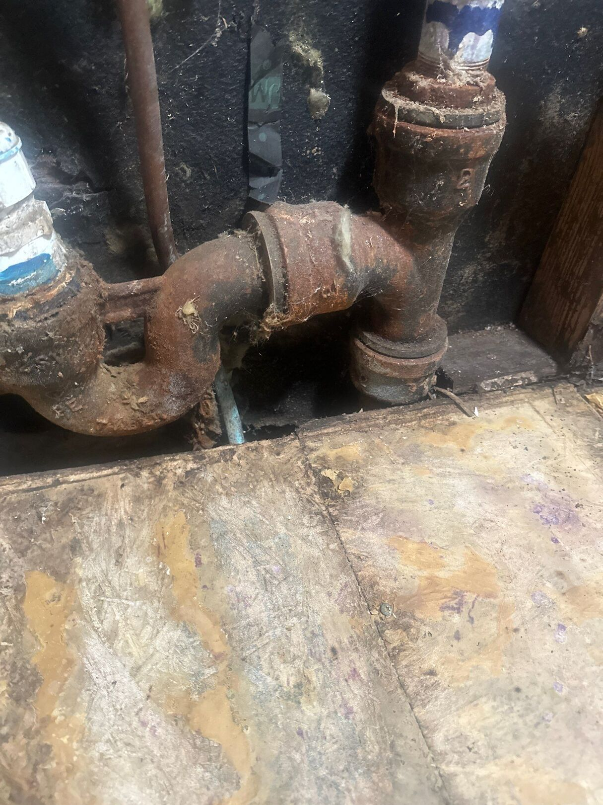
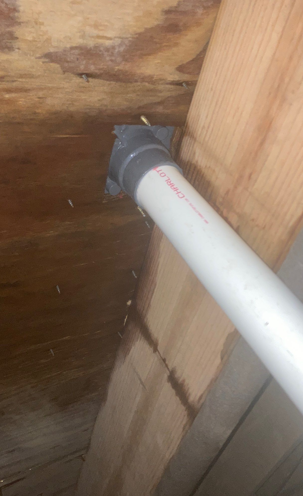
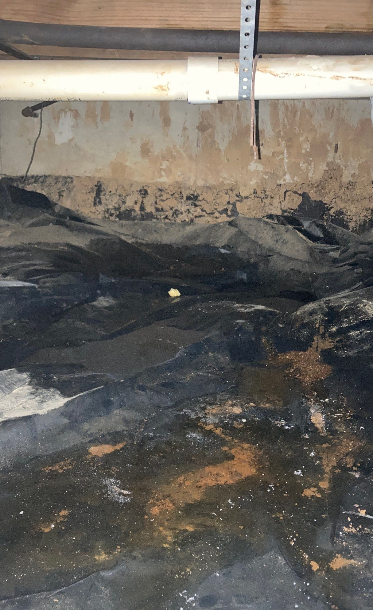
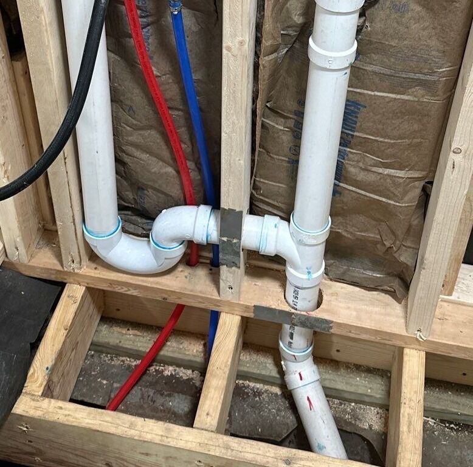
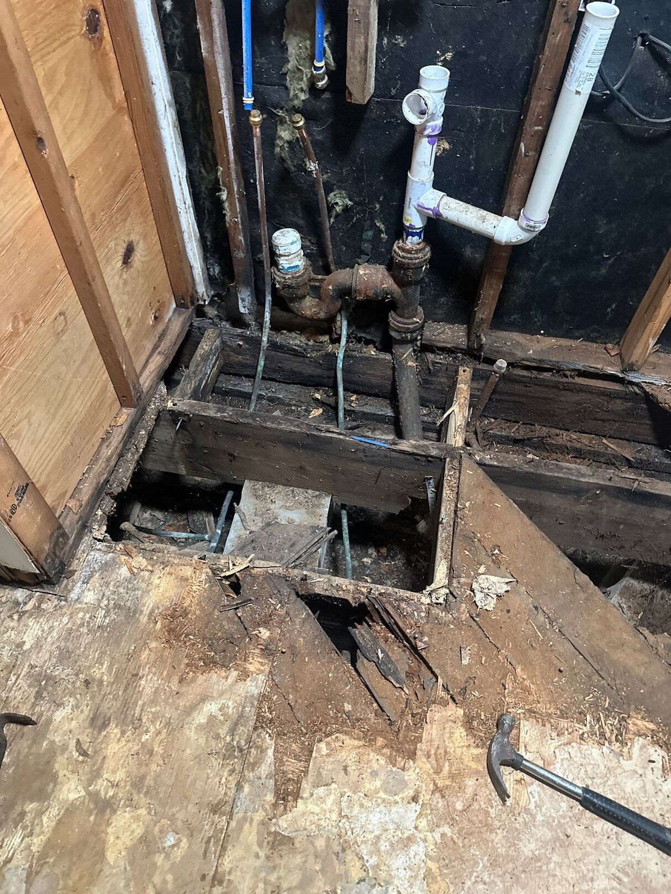
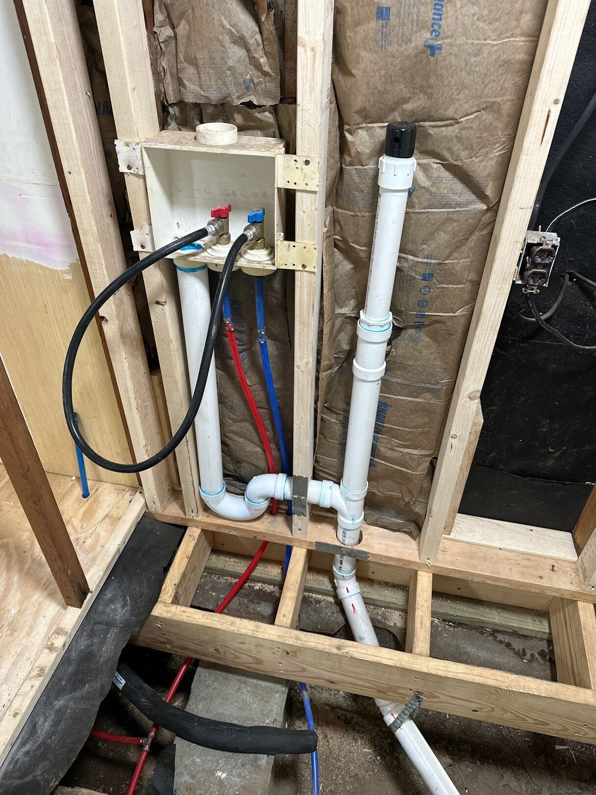

Property Owners Maintenance Plan
Stopping Leaks Before They Damage Your Home.
Learn where leaks commonly begin, what warning signs to watch for, and how early action can help limit water damage.
Read the leak stopping guideDrain line leak repairs and restoration in Jonesboro, AR and surrounding Northeast Arkansas communities covers the leaking drain line and the water damage it caused. Crain Bros Inc repairs the failed drain line and restores the damage from emergency cleanup and drying to full restoration of the property. Crain Bros Inc is family owned and operated since 1984.

Emergency drain overflow service removes standing drain water from flooded basements and buildings. Crain Bros Inc extracts the water, stops fixtures from feeding the leak, and maps the wet materials with leak detection readings. Sewer backup cleanup removes contaminated water and prepares the area for cleaning and drying.
Clogged drain repair service finds and fixes the cause of slow drains, recurring clogs, and backups. Crain Bros Inc inspects the drain line for buildup, roots, and drain failure. A sink that will not drain or a tub that will not drain gets the full drain line checked. Failed sections get repaired or replaced, and the line gets tested before cleanup begins.
Fixture drain repair service fixes leaking drains at shower, bathtub, toilet, sink, dishwasher, washing machine, and AC condensate fixtures. Crain Bros Inc locates the failed drain, opens the wet area, and repairs the line. Wet subfloor, joists, cabinets, and walls get cleaned, dried, and restored after the repair.
Building drain and sewer drain repair service fixes the main lines that carry waste out of the building. Crain Bros Inc traces leaks in building drains, sewer drains, septic drains, crawlspace drains, and underground drains. Failed sections get repaired or replaced. Damaged joists, subfloor, and liner get restored after drying.


Cast iron drain replacement and PVC drain repair service removes failed drain pipe. Crain Bros Inc inspects corroded cast iron and cracked or separated PVC. Failed sections get replaced with new drain pipe. Sound sections stay in service.

Drain water cleanup service removes contamination and prepares the structure for drying. Drain water is usually a lot more unsanitary than clean water from a supply pipe failure. Crain Bros Inc removes materials that cannot be cleaned, then cleans the remaining framing, subfloor, and surfaces. Cleanup follows CDC sewage cleanup guidance for protective gear during sewage cleanup. EPA mold course guidance on contaminated water separates clean water from sewage contamination. Personal property in wet rooms moves to dry space through personal property and contents care.
Structural drying service dries subfloor, joists, and framing after cleaning. Crain Bros Inc sets air movers and dehumidifiers and tracks moisture readings until the structure verifies dry. Prompt drying helps prevent mold growth in wet materials. Finish work waits on verified readings.
Drain line repair and restoration service returns the property to finished condition. Crain Bros Inc tests the repaired line, repairs subfloor and joists, closes walls, and restores flooring. Finished rooms go back into service when the repairs are complete.


Documentation service records the job from inspection to completion. Photos show the drain condition and the affected rooms. Moisture readings show where water traveled and when drying finished. The approved scope and progress records show the work performed. We work on properties involved in insurance claims. The property owner receives the complete record.
Crain Bros Inc serves Jonesboro, Paragould, Blytheville, Trumann, Newport, Brookland, Bono, Bay, Lake City, Monette, Caraway, Harrisburg, Gosnell, and Walnut Ridge.
Property Owners Maintenance Plan
Learn where leaks commonly begin, what warning signs to watch for, and how early action can help limit water damage.
Read the leak stopping guideThe Property Problem Report
Use the stain location, timing, nearby rooms, weather, plumbing, and HVAC operation to guide the search before repairing the ceiling.
Read the ceiling stain reportThe Property Problem Report
Stop the water safely, document what happened, understand the affected areas, and stay in control of the work and cost.
Read the water heater leak reportSafety guidance for protective equipment and hazards associated with floodwater and sewage
CDC Disaster Cleanup SafetyGuidance on drying water-damaged areas within 24 to 48 hours and on protection controls for contaminated water
EPA Mold Course Chapter 4Homeowner guidance on correcting water problems, drying affected materials, and checking for hidden moisture
EPA Brief Guide to Mold, Moisture and Your HomeDefinitions for the building drain inside the building and the building sewer running to a public sewer or disposal point
Building Drain and Building Sewer DefinitionsTrade guidance on cast iron corrosion, PVC joint failure, recurring clogs, and drain pipe warning signs
Cast Iron and PVC Drain Pipe Failure SignsTrade guidance on cast iron drain corrosion, pipe thinning, leaks at joints, and replacement signs
Cast Iron Drain Pipe ProblemsRelated services carry a drain line leak job from the leaking pipe through cleaning, drying, and repairs to the finished rooms.
Emergency response after a drain line leak stops fixture use through the leaking line. The first visit sets up the inspection that follows.
Emergency Response ServicesThe inspection reads the drain path, the subfloor, the joists, and the walls the drain water reached. What it finds sets the removal scope, the cleaning plan, and the drying plan.
Building Inspection and Diagnostic ServicesLeak detection after a drain line leak reads moisture around the drain path and the fixtures it serves. Those readings draw the map of where the drain water went.
Leak Detection ServicesPlumbing services after a drain line leak replace the failed pipe section and test the repaired line. Cleaning and drying carry the job forward once the line holds.
Plumbing ServicesWater damage restoration after a drain line leak carries the whole job from the leaking pipe through cleaning and drying to the finished rooms. One job covers the source, the cleaning, the drying, and the repairs.
Water Damage Restoration ServicesProperty and building restoration after a drain line leak brings the structural repairs, the finish repairs, and the trade work together. The repair runs as one coordinated job.
Property & Building Restoration ServicesMold damage restoration after a drain line leak starts with prevention through cleaning, drying access, and verified drying. Inspection decides whether mold cleanup is needed.
Mold Damage Restoration ServicesCrawlspace services after a drain line leak cover liner cleanup, joist inspection, and subfloor repair access. The crawlspace work follows the drain repair.
Crawlspace ServicesFraming repair after a drain line leak follows inspection of joists, subfloor framing, and wall studs. Finish work waits until readings verify the structure is dry.
Framing Repair ServicesInsulation services after a drain line leak replace wet insulation in floors and wall cavities. The cavity gets new insulation after drying.
Insulation ServicesDrywall repair services after a drain line leak cover opened walls, wet ceilings, and access openings. The drywall goes back up once the framing is dry.
Drywall Repair ServicesFlooring installation and repair after a drain line leak fixes subfloor and finish flooring the drain water reached. The new flooring goes in once the subfloor is repaired and dry.
Flooring Installation and Repair ServicesCabinetry repair and replacement after a drain line leak deals with cabinets and vanities the drain water reached. Crain Bros Inc restores the cabinet that can be saved and rebuilds the damaged box that cannot.
Cabinetry Repair and Replacement ServicesTrim carpentry after a drain line leak replaces baseboards and trim along wet walls. New trim finishes the rooms after walls and floors are repaired.
Trim Carpentry ServicesPainting services after a drain line leak cover repaired walls and trim once the drywall underneath is ready. Fresh paint finishes the rooms after wall repairs are done.
Painting ServicesElectrical services after a drain line leak check outlets and wiring near wet walls for water exposure. The evaluation comes before the rooms go back into use.
Electrical ServicesPersonal property and contents care after a drain line leak moves belongings from wet rooms to dry space. Contents decisions get recorded while the structure dries.
Personal Property and Contents Care ServicesStop using fixtures connected to the leaking line. Keep people away from wet outlets and ceilings. Take photos of visible damage. Call for extraction and inspection of the drain path.
Drain leaks often show up when a fixture runs. A ceiling stain under a bathroom that grows during showering points toward a drain leak. Slow drains and recurring clogs point the same way. Sewer odor and rust at pipe joints are signs too.
Materials that cannot be cleaned come out first. Remaining framing and subfloor get cleaned. The work area gets cleaned too. Personal property in wet rooms moves to dry space. The inspection findings set what gets cleaned.
Drying time depends on how much material got wet. Airflow, dehumidification, and hidden moisture affect the schedule. Moisture readings verify when drying is complete.
Yes. The failed drain section is replaced and tested. Cleaning and drying follow the repair. Subfloor, joists, walls, and flooring are repaired after readings verify dry conditions.
Yes. Photos, moisture readings, the approved scope, progress records, and completed repairs are documented. The property owner receives the record.